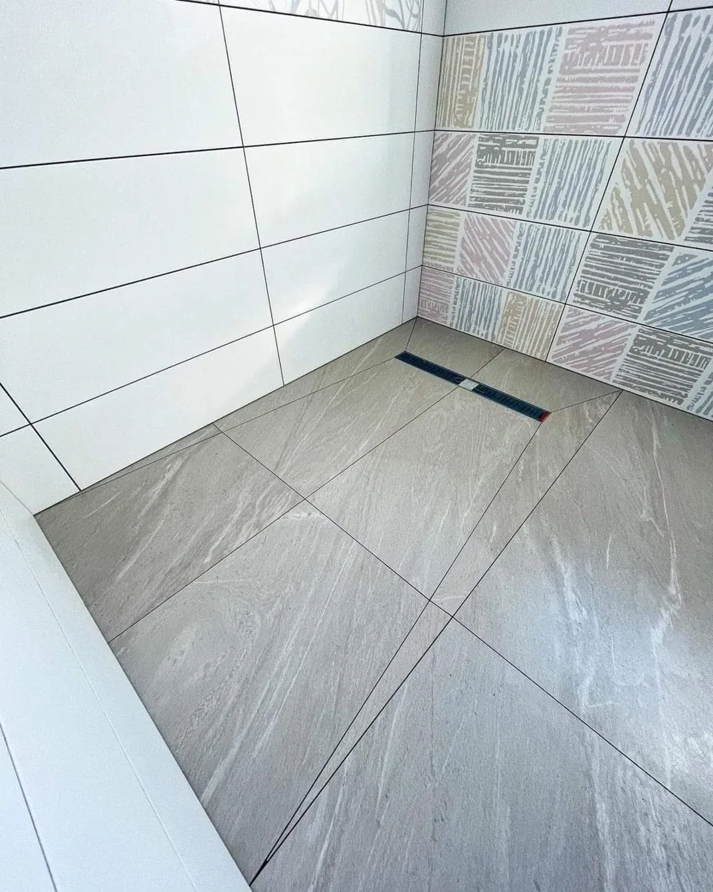
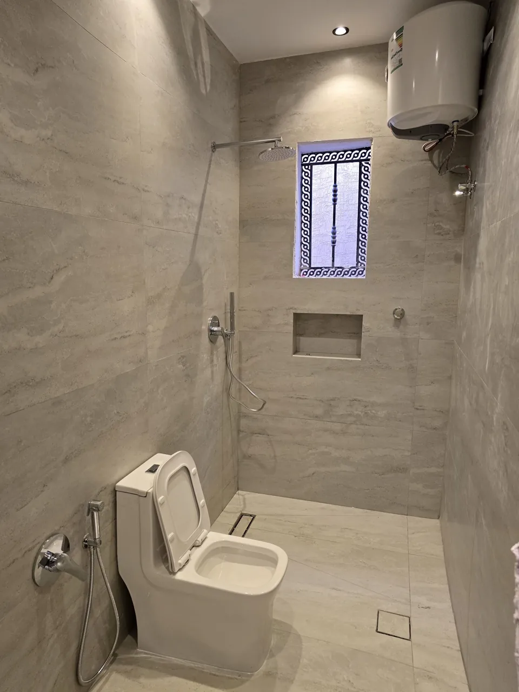

حمّامك يستاهل
تفاصيل أجمل.
ترميم حمامات وتركيب سيراميك وبورسلان ورخام في الرياض. نرتّب معك الخامة والتوزيع وتفاصيل التنفيذ، من احتياج المكان إلى ذوقك.


قرّب على التفاصيلمن أعمالنا في الرياض

لقطة أخرى من الأعمالتشطيب الحماماتمساحتك هي البداية.
خلّنا نرتّب تفاصيلها.
تجديد حمام، أرضية لبيت، أو تشطيب لمساحة خارجية؟ اكتشف الخدمة الأقرب لفكرتك، وتعرّف على تفاصيلها قبل أول خطوة.
استعرض كل الخدماتترميم الحمامات
تجديد تشطيبات الحمام وتنسيق الأرضيات والجدران، انطلاقًا من حالة المكان واحتياجك الفعلي.
اكتشف تفاصيل الخدمةتركيب السيراميك
تبليط الأرضيات والجدران بتوزيع يراعي المقاسات والزوايا واستقامة الفواصل.
تركيب البورسلان
بورسلان للحمامات والفلل والمساحات الداخلية، مع عناية بالمناسيب واتجاه العروق والقص.
تركيب الرخام
تركيب الرخام ومناقشة تفاصيل الحواف والعروق ومواضع الاستخدام قبل اعتماد التنفيذ.
لكل خامة إحساس.
اختر ما يشبه مساحتك.
استكشف ما تحتاج مناقشته قبل اختيار السيراميك أو البورسلان أو الرخام. الشكل بداية، وتفاصيل الاستخدام تكمل القرار.
ترتيب يبدأ من المقاس.
المقاس واتجاه الصفوف والقص عند الزوايا، تفاصيل تساعدك على تخيّل الشكل قبل التركيب.
- موضع الاستخدام
- راجع هل المنتج مخصص للأرضيات أم للجدران، ومدى ملاءمته للمكان.
- تفصيل يناقش
- توزيع الصفوف، أماكن القص، وعرض الفواصل المطلوب.
الأشكال توضيحية. مواصفات الخامة وملاءمتها تُراجع مع المورد.
مساحة تقرؤها كوحدة واحدة.
حدّد المقاس واتجاه النقشة، ثم ناقش انتقال البلاط بين الغرف وحول الأبواب والتفاصيل.
- موضع الاستخدام
- حدّد المساحة والمقاس وملمس المنتج وبياناته مع المورد.
- تفصيل يناقش
- حالة السطح، اتجاه النقشة، وقص القطع حول الزوايا.
الأشكال توضيحية. مواصفات الخامة وملاءمتها تُراجع مع المورد.
كل عِرق له مكانه.
صورة العينة ونوع الحجر وترتيب القطع، نقطة بداية لمناقشة شكل الرخام وتفاصيل حوافه.
- موضع الاستخدام
- وضّح المكان ونوع الخامة، وراجع متطلبات العناية مع المورد.
- تفصيل يناقش
- تسلسل العروق، الحواف، والمقاسات المطلوبة لكل قطعة.
الأشكال توضيحية. مواصفات الخامة وملاءمتها تُراجع مع المورد.
وراء الشكل المرتّب،
تفاصيل تستحق نظرة.
لقطة حقيقية من مرحلة التركيب. استكشف الفواصل والزوايا وفتحات التأسيس، وتعرّف على ما نناقشه عند ترتيب العمل.

إيقاع واحد بين القطع.
تظهر الفواصل والمشابك الحمراء في هذه المرحلة من التركيب. توزيع الصفوف وعرض الفواصل من التفاصيل التي تُناقش قبل التنفيذ.
عرض الفاصل وتوزيع القص حسب مقاس البلاط.
التفصيلة عند الالتقاء.
التقاء الجدارين جزء من قراءة المساحة. نناقش ترتيب القطع ونهاية الصف والقص عند الزاوية، حتى تتضح التفاصيل قبل التركيب.
نهاية الصف والتقاء الخامات عند الزوايا.
نرتّب مكان كل فتحة.
تظهر فتحة التأسيس في الجدار أثناء العمل. مواقع الخدمات والمقاسات وتفاصيل القص حولها تحتاج تنسيقًا قبل اعتماد توزيع البلاط.
مواقع الفتحات وتفاصيل القص حولها.
صورة من مكانك تساعدنا نبدأ النقاش.
شوف الخامات.
وقرّب على التفاصيل.
صور نشرها المالك في ملف «مبلط حمامات» على Google، من مراحل التنفيذ إلى التشطيب.
المعرض الكامل


طلبك يبدأ
بخطوات واضحة.
ما تحتاج تكون حاسم كل شيء. ابدأ بما عندك من معلومات، ونناقش معك ما يحتاج توضيحًا.
- 01
أرسل صورة ووصفًا
نوع الخدمة، الحي، ومقاس تقريبي إذا توفر. أظهر تفاصيل المكان اللي تهمك.
- 02
نراجع المطلوب
نتحدث عن حالة السطح والخامة والتوزيع والأعمال التي تحتاج ترتيبًا قبل التبليط.
- 03
نتفق على التفاصيل
يتحدد نطاق العمل والمواد والخطوة التالية حسب احتياج المشروع وظروف الموقع.
إجابات تساعدك
تاخذ قرارك.
تفاصيل مختصرة عن طلب الخدمة واختيار الخامات.
وين تقدمون خدمات التبليط؟
نقدم خدماتنا داخل مدينة الرياض. عنوان النشاط الظاهر في الملف التجاري: طريق ابي بكر الصديق، حي المصيف، الرياض 12466. أرسل حي المشروع عند التواصل لتنسيق المتابعة.
هل عندكم صور من الأعمال؟
نعم، المعرض هنا يستخدم صورًا من قسم «من المالك» في الملف التجاري. تقدر تكبّر الصور أو تفتح الملف على Google لمشاهدة المزيد.
كيف أحصل على تكلفة للمشروع؟
أرسل صورًا ومقاسات تقريبية ونوع الخامة، ووضح هل المطلوب تركيب فقط أو إزالة وتجديد. تتحدد التكلفة بحسب مساحة العمل والتجهيز والمواد والبنود المتفق عليها.
هل تختارون الخامة بدلًا عني؟
نناقش معك المقاس والتوزيع وموضع الاستخدام. مواصفات المنتج وملاءمته تؤخذ من المورد، والاختيار النهائي يرتبط بذوقك واحتياج المكان.
هل تشمل الأعمال السيراميك والبورسلان والرخام؟
نعم، هذه من الخدمات الموجودة في الموقع، إضافة إلى ترميم الحمامات وتبليط الفلل والأحواش والأسطح. التفاصيل والنطاق يحددان حسب المشروع.
حمام يحتاج تجديد؟
أو مساحة تنتظر فكرتك؟
أرسل المطلوب بالطريقة اللي تناسبك. نبدأ بصورة واضحة لما تحتاجه، ثم نناقش التفاصيل.
054 656 2621طريق ابي بكر الصديق، المصيف، الرياض 12466افتح الملف التجاري على Google